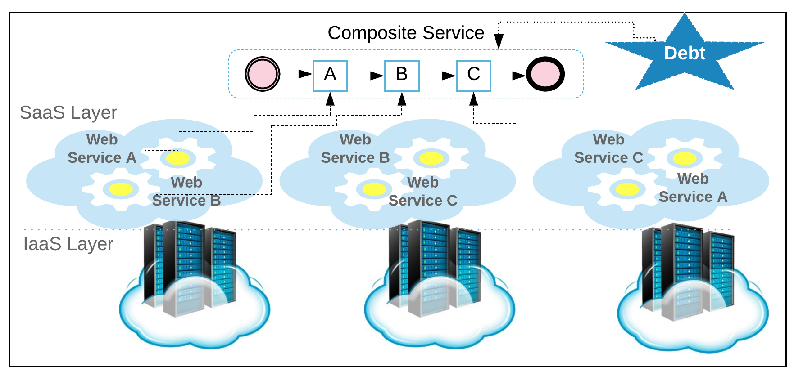

Service Composition in SaaS Cloud using Technical Debt Analysis

Service composition is a key technology for building software application by composing multiple
existing web services in SaaS Cloud. However, a software application in multi-tenant SaaS cloud would inevitably operate
under dynamic changes on the workload from the tenants, and thus it is not uncommon for the composition to encounter
under-utilisation and over-utilisation on the component services. The former reduces the service revenue and the latter,
in contrast to the over-utilisation that leads to QoS constraints violation. In fact, both cases are undesirable,
and bring a challenging task: when to (re)compose the component services such that the utility over time is maximised ?.
We are taking advantage of "Technical Debt" metaphor for making economic-driven decisions for service composition.
In particular, the ultimate goal of this research work is to create economic-driven approaches for understanding,
improving and assessing the runtime behaviour of composed software application.
Contact:
Room No. 124, School of Computer Science
University of Birmingham
Birmingham, B15 2TT, UK
E-mail:
s.kumar.8@cs.bham.ac.uk
satish.serg@gmail.com